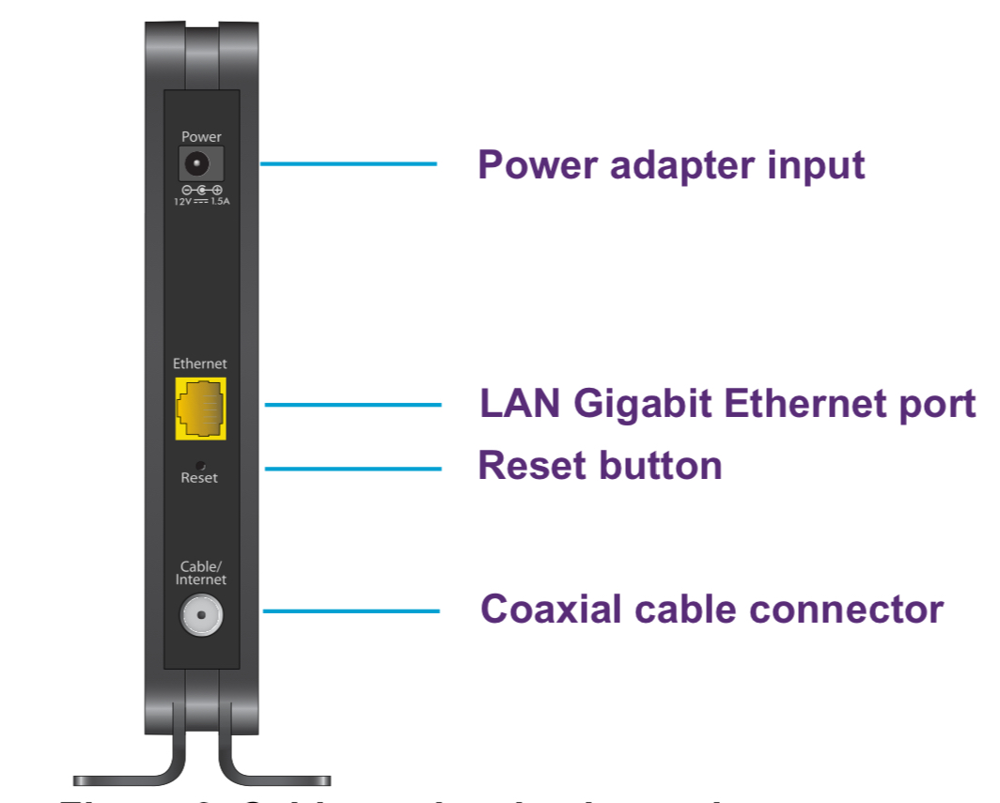
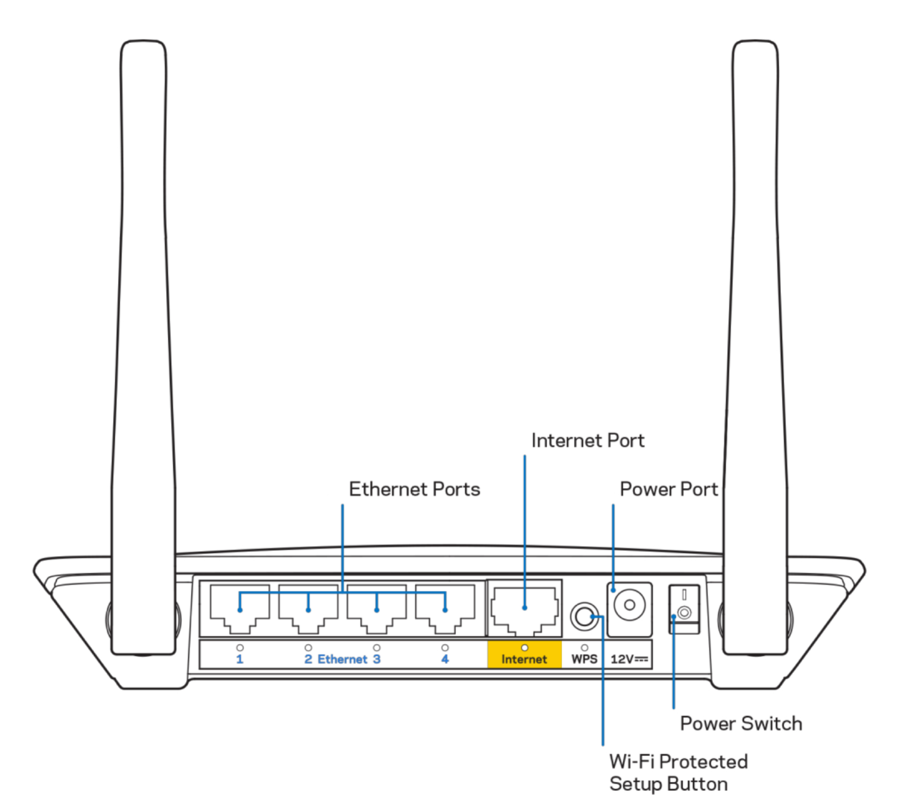

Denil Dominic
WRD 204: Technical Writing
Prof. Aleshia Jefferson
03/14/2024
How to Set Up a Wi-Fi Modem and Router
The instructions below explain how to set up the NETGEAR CM500 cable modem and the Linksys E5350 Wi-Fi 5 router to establish a home internet.
The procedure will be helpful to individuals trying to set up a home internet connection for personal use, small business owners, students, remote workers, or anyone looking for an affordable modem and router.
Items Needed:
- Netgear CM500 Cable Modem.
- Linksys E5350 Wi-Fi 5 router.
- Internet connection from an internet service provider.
• An internet service provider (Comcast, Verizon, AT&T, etc.) is a company that provides subscribers with access to the internet.
- Ethernet Cable (Included with the router).
- Coaxial cable: A type of shielded and insulated copper cable used commonly by internet providers to deliver internet to end users.
- Power adapters for both the modem and the router.
Procedure Steps:
- Locate the coaxial cable port on your wall outlet designated for your internet service and connect one end of the coaxial cable to it.
- Connect the other end of the coaxial cable on the back of the modem, to a port that resembles the coaxial cable port on the wall outlet.

Figure 1: Back panel of the modem.
- Plug one end of the ethernet cable to the port labeled as "WAN (Wide Area Network)" or "Internet" on the back of the router. Plug the other end of the cable to the port labeled as "Ethernet" on the back of the modem.

Figure 2: Back panel of the router.
- Connect the power adapter included with the modem to the power port behind the modem. Plug the power adapter into a power outlet.
Safety Information:
Only use the power adapters provided by the manufacturer. Using a power adapter with incorrect wattage rating may damage the modem and/or the router and void the warranty.
- Connect the power adapter included with the router to the power port behind the router.
- Plug the power adapter into a power outlet.
- Wait a few minutes for the modem and the router to boot up.
- Check if the lights on the modem turns green. Once the lights are solid, the router will also be connected in a few minutes.
- Follow the router manufacturer's instructions to change the Wi-Fi network name, password, and other settings.
- Ensure internet connectivity by connecting to the Wi-Fi network and opening a web browser on a connected device.
- The residential/ business internet connection is now set up and the customer's personal devices can now access the internet service provided by the internet service provider.
If you encounter any issues or have any questions regarding the set-up instructions, refer to the company websites below:
Netgear Product Support Website.
Linksys Product Support Website.